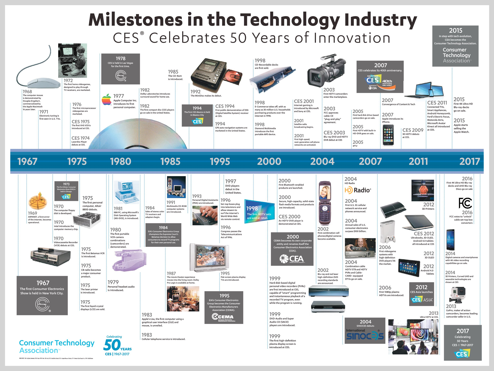

The Origins and Evolution of TechCon
TechCon began as a small-scale technical symposium in the early 1980s, created to bring together engineers, researchers, and industry leaders working on the frontiers of semiconductor and computing technologies. At the time, the field was rapidly expanding, yet lacked a dedicated space where academia and industry could openly exchange ideas, discuss breakthroughs, and address shared challenges. The early conferences were modest, featuring a limited number of presentations and poster sessions, but they quickly gained recognition for their focus on innovation and collaboration. As the technology sector grew through the 1990s and 2000s, so did TechCon. What started as a forum for semiconductor specialists evolved into a multidisciplinary conference, covering advances in hardware design, software systems, materials science, and emerging areas such as artificial intelligence and quantum computing. Each edition of TechCon attracted more participants from around the world, expanding its scope beyond research into entrepreneurship, sustainability, and workforce development. Today, TechCon is recognized as one of the leading conferences in its field, featuring hundreds of poster sessions, technical talks, keynote speeches, and networking opportunities. Its impact extends beyond knowledge-sharing—it serves as a launchpad for collaboration between universities, startups, and multinational corporations. Initiatives like *CareerConnections* illustrate how TechCon has become not only a hub for innovation but also a bridge linking the next generation of engineers and scientists to the industries that will shape the future. From its humble beginnings to its present global influence, TechCon continues to evolve in step with the technology it celebrates, remaining a vital meeting point for those pushing the boundaries of possibility.
